1. 啟動畫面

2. 首頁
主頁
3. 提交魚塘相片 - 選擇魚塘
提交魚塘相片
魚塘編號
MP-001
已選擇: MP-001
選擇降水工作階段
已提交階段：乾塘後第7天
4. 提交魚塘相片 - 上傳相片
提交魚塘相片
相片要求
魚塘編號
MP-001
降水階段
基本降水後第1天
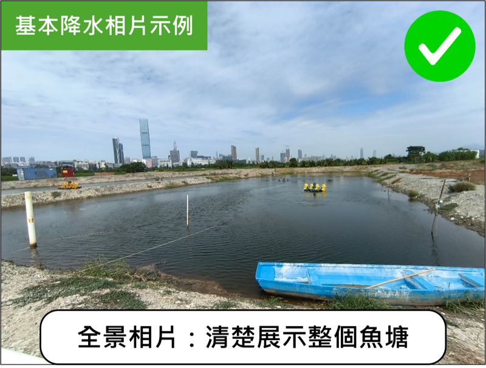
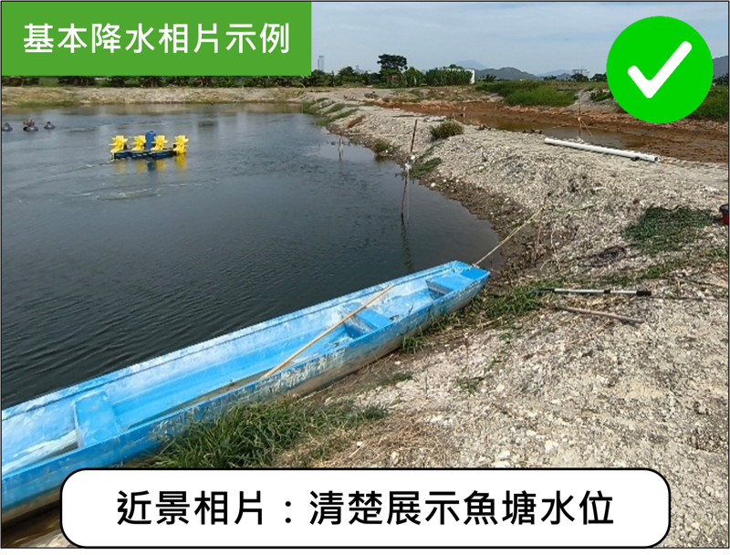
+
+
+
+
5. 選擇位置（地圖）
點選地圖以設定位置
座標：
22.475123, 114.032456
6. 魚塘相片要求
魚塘相片要求
關閉
拍攝魚塘水位相片：
監察管理工作實施 — 在協議實施地點於指定降水工作階段，拍攝該魚塘的水位。
指定降水工作階段：降水前、基本降水後第1日、基本降水後第7日、乾塘後第1日、乾塘後第7日。
魚塘水位相片要求
合共拍攝最少3張相片：
• 最少1張全景相片：清楚展示整個魚塘
• 最少2張近景相片：清楚展示魚塘水位
• 必須為日間拍攝的相片
合符要求之相片示例：
基本降水相片示例：
乾塘相片示例：
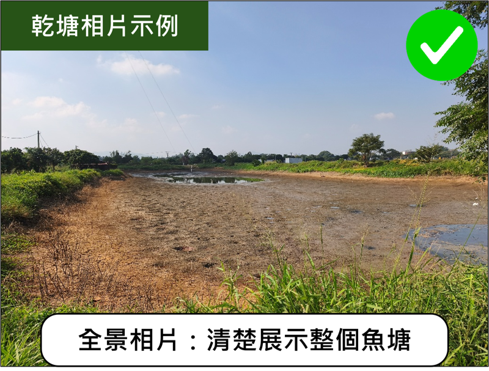
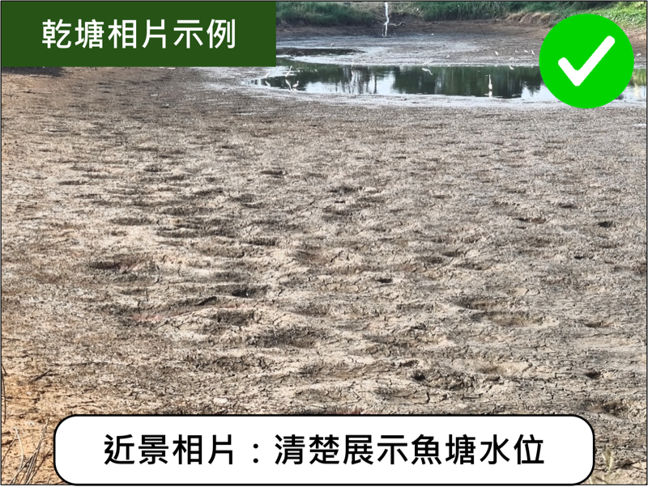
不合符要求之相片：
• 相片模糊不清
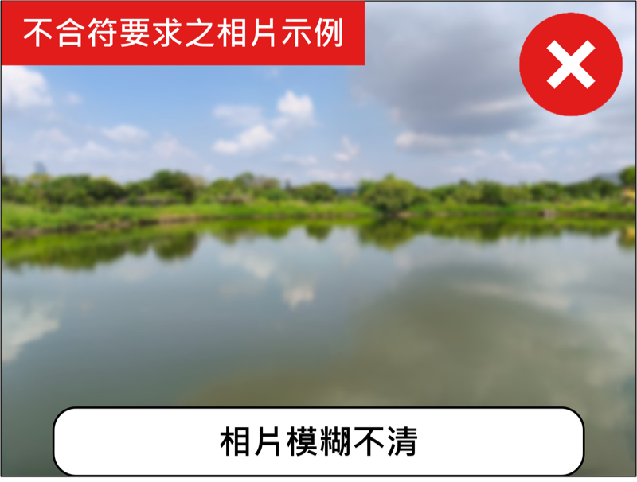
• 晚上拍攝的相片
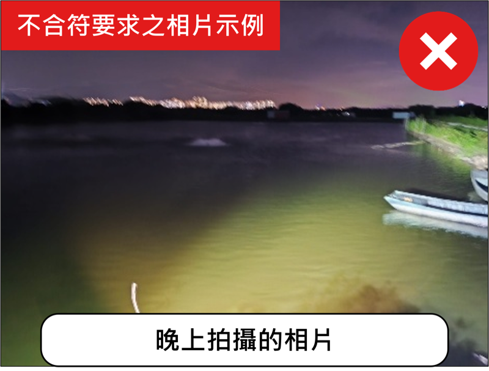
• 無法清楚顯示魚塘
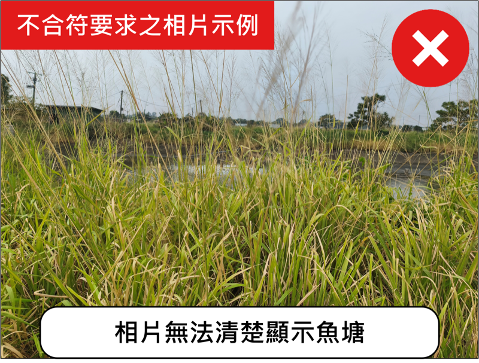
• 同一時間拍攝多個魚塘
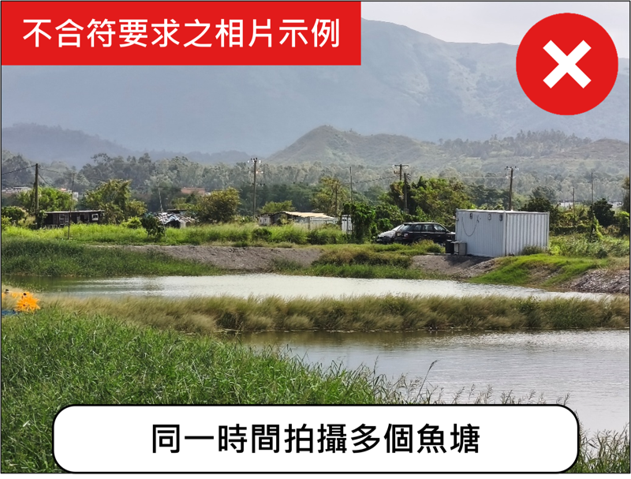
7. 雀鳥相片要求
雀鳥相片要求
關閉
拍攝雀鳥使用魚塘相片：
監察管理工作成效 — 在協議實施地點拍攝雀鳥使用魚塘的相片。
拍攝雀鳥使用該魚塘的照片
相片須能夠清晰顯示雀鳥使用該魚塘
雀鳥相片示例（符合要求）：
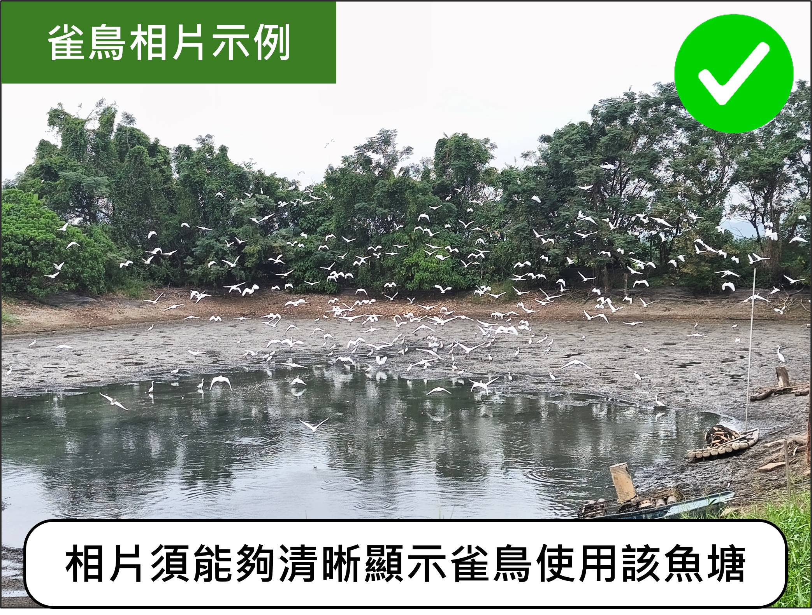
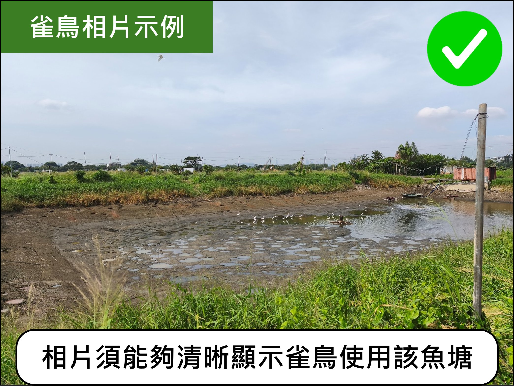
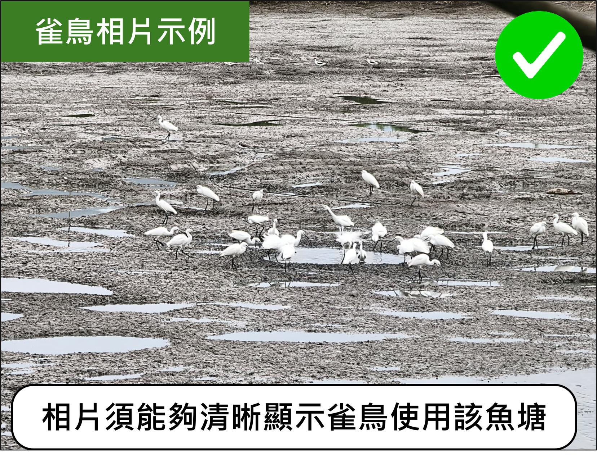
不合符要求之相片：
• 相片無法顯示雀鳥使用該魚塘
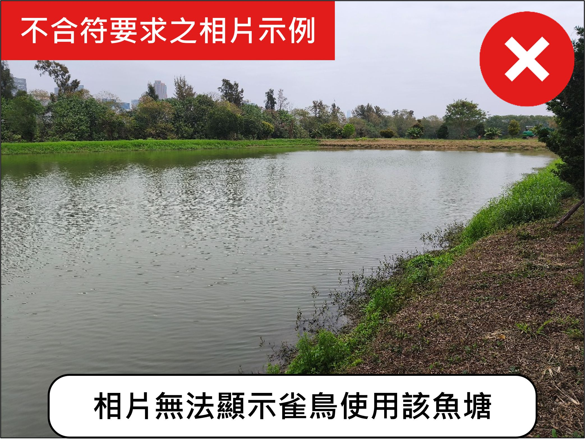
• 相片模糊不清
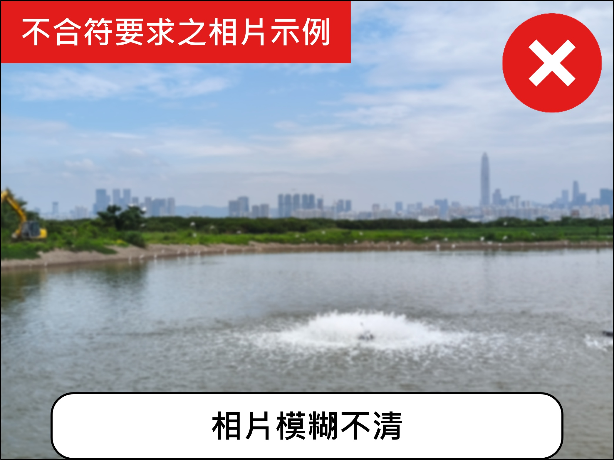
備註：
切勿過於接近雀鳥，以免驚擾雀鳥
8. 我的記錄
我的記錄
🐟 魚塘記錄
共 12 筆
MP-001
2024-02-15 · 降水前
已審核
MP-002
2024-02-14 · 乾塘後第1日
待審核
🦅 雀鳥記錄
共 8 筆
MP-001
2024-02-13 · 非降水/乾塘時
已審核
9. 相簿
魚塘相簿
10. 更多
更多
帳戶資料
登出
11. 關於本計劃
關於本計劃
關閉
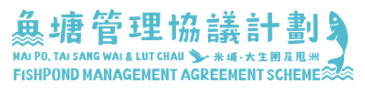
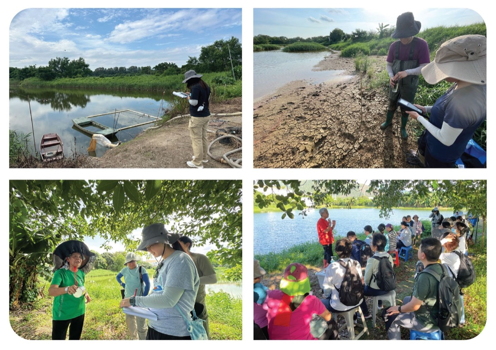
計劃簡介
計劃融合積極魚塘生境管理、科學監測與研究、公眾參與，夥拍后海灣米埔、大生圍及甩洲養魚戶，共同保育本地魚塘生態和文化，推廣本地漁業。
目標
• 夥拍養魚戶，於魚塘進行生境管理措施，為水鳥提供覓食和棲息的環境，以增強魚塘生態價值
• 進行生態及環境調查，提供水鳥及其生境的數據，監測魚塘狀況，以支持可持續生境管理
• 與養魚戶合作，向公眾宣傳本地魚塘文化及生態價值，促進生態保育與養魚的和諧共存
• 提升公眾對濕地保育的認識及參與
資助：
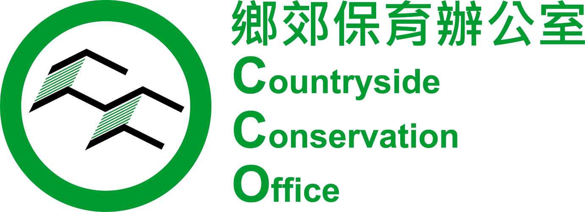
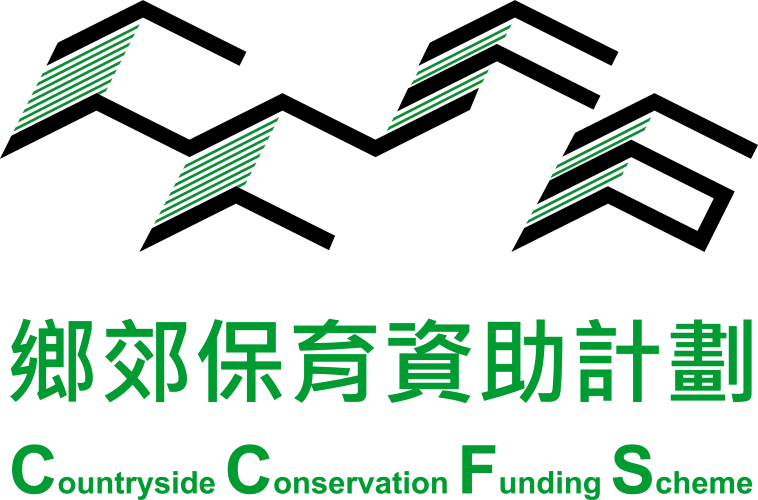
主辦：
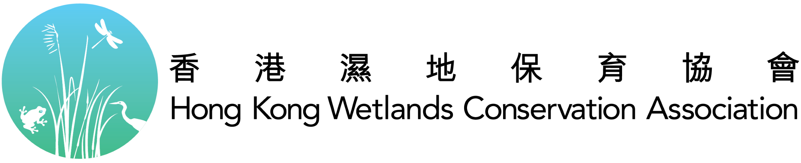